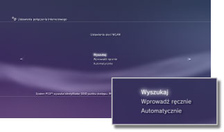
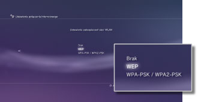
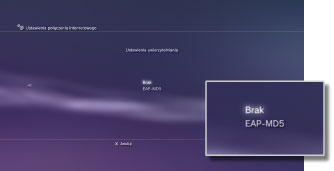
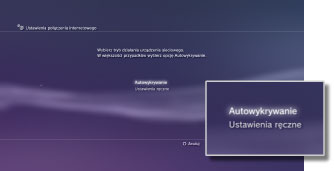
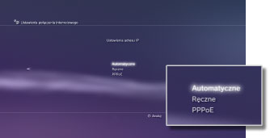
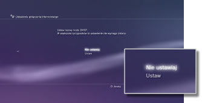
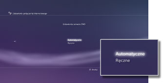
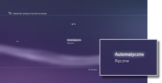
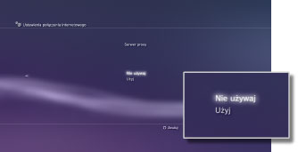
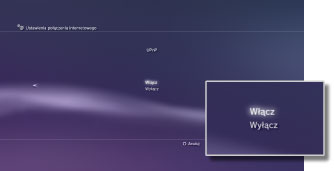

Ustawienia > Ustawienia sieci > Ustawienia połączenia z Internetem (ustawienia zaawansowane)
Ustawienia połączenia internetowego (advanced settings)
Jeśli nie możesz połączyć się z Internetem przy użyciu podstawowych ustawień, zmień swoje ustawienia w odpowiedni sposób. Dostosuj każdy element w sposób odpowiedni dla danego środowiska sieciowego.
1. |
Wybierz opcje |
|---|---|
2. |
Wybierz opcję [Ustawienia połączenia internetowego]. |
3. |
Wybierz opcję [Niestandardowe]. |
 (Ustawienia) >
(Ustawienia) >  (Ustawienia sieci).
(Ustawienia sieci).Metoda połączenia
Wybierz metodę połączenia z Internetem. Ustawienie jest dostępne tylko w konsolach PS3™ wyposażonych w mechanizm obsługi bezprzewodowych sieci LAN.

| Połączenie przewodowe | Utwórz połączenie przewodowe przy użyciu kabla Ethernet |
|---|---|
| Bezprzewodowe | Utwórz połączenie bezprzewodowe za pośrednictwem bezprzewodowej sieci lokalnej |
Ustawienia sieci WLAN
Pozwala określić identyfikator SSID punktu dostępowego. Ustawienie jest dostępne tylko w konsolach PS3™ wyposażonych w mechanizm obsługi bezprzewodowych sieci LAN.

| Wyszukaj | Umożliwia wyszukiwanie punktów dostępowych znajdujących się w pobliżu. Wybierz to ustawienie, jeśli nie znasz identyfikatora SSID punktu dostępowego. Konsola wyszuka punkty dostępowe znajdujące się w pobliżu oraz wyświetli informacje o identyfikatorze SSID i ustawieniach zabezpieczeń. |
|---|---|
| Wprowadź ręcznie | Umożliwia określenie punktu dostępowego przez ręczne wprowadzenie identyfikatora SSID z klawiatury. Użyj tego ustawienia, jeśli znasz identyfikator SSID. |
| Automatycznie | Można użyć funkcji automatycznego ustawienia punktu dostępowego. Ustawienie jest dostępne tylko w regionach, w których są sprzedawane konsole PS3™ obsługujące tę funkcję. Wybierz to ustawienie, jeśli korzystasz z punktu dostępowego, który obsługuje funkcję automatycznej konfiguracji. Postępuj zgodnie z instrukcjami wyświetlanymi na ekranie. |
Ustawienia zabezpieczeń sieci WLAN
Umożliwia wybranie klucza szyfrowania dla punktu dostępowego. Ustawienie jest dostępne tylko w konsolach PS3™ wyposażonych w mechanizm obsługi bezprzewodowych sieci LAN.

| Brak | Bez określenia klucza szyfrowania. |
|---|---|
| WEP | Określ klucz szyfrowania. Klucz szyfrowania będzie można wprowadzić w następnym ekranie. Klucz szyfrowania zostanie wyświetlony jako ciąg gwiazdek. |
| WPA-PSK / WPA2-PSK |
Ustawienia uwierzytelniania
Te ustawienia są dostępne tylko w konsolach PS3™ sprzedawanych w Korei oraz w konsolach PS3™ wyposażonych w mechanizm obsługi bezprzewodowych sieci LAN.

| Brak | Nie wprowadzaj informacji uwierzytelniania. |
|---|---|
| EAP-MD5 | Wprowadź informacje uwierzytelniania, gdy korzystasz z publicznych usług WLAN. Na następnym ekranie wprowadź nazwę użytkownika i hasło. Szczegółowe informacje na ten temat można uzyskać u dostawcy ogólnodostępnej sieci WLAN. |
Tryb pracy sieci Ethernet
Umożliwia ustawienie prędkości transmisji danych sieci Ethernet oraz trybu pracy. Zwykle należy wybrać opcję [Autowykrywanie].

| Autowykrywanie | Automatyczne określenie podstawowych ustawień. |
|---|---|
| Ustawienia ręczne | Umożliwia ręczne ustawienie prędkości transmisji danych sieci Ethernet oraz trybu pracy. |
Ustawienia adresu IP
Umożliwia wybranie metody pobierania adresu IP podczas łączenia się z Internetem.

| Automatyczne | Używanie adresu IP przydzielonego przez serwer DHCP. Na następnym ekranie można wprowadzić nazwę hosta serwera DHCP. |
|---|---|
| Ręczne | Umożliwia ręczne wprowadzenie adresu IP. Można określić wartości dla adresu IP, maski podsieci, domyślnego routera i podstawowego oraz drugorzędnego serwera DNS w następnym ekranie. |
| PPPoE | Umożliwia łączenie z Internetem za pomocą protokołu PPPoE. Na następnym ekranie można wprowadzić nazwę użytkownika i hasło. |
DHCP
Umożliwia ustawienie nazwy hosta serwera DHCP. Zazwyczaj należy wybrać opcję [Nie ustawiaj].

| Nie ustawiaj | Nazwa hosta serwera DHCP nie jest konfigurowana. |
|---|---|
| Ustaw | Umożliwia ustawienie nazwy hosta serwera DHCP. |
Ustawienia serwera DNS
Umożliwia określenie adresu serwera DNS.

| Automatyczne | Automatyczne pobieranie adresu serwera DNS. |
|---|---|
| Ręczne | Umożliwia ręczne wprowadzenie adresu serwera DNS. |
MTU
Umożliwia skonfigurowanie wartości MTU używanej w trakcie przesyłania danych. Zwykle należy wybrać opcję [Automatyczne].

| Automatyczne | Automatyczne określanie wartości MTU. |
|---|---|
| Ręczne | Umożliwia ręczne określenie maksymalnych rozmiarów pakietów danych (w bajtach), które mogą być przesłane podczas jednej transmisji. |
Serwer proxy
Umożliwia wybranie serwera proxy, który ma być używany.

| Nie używaj | Serwer proxy nie będzie używany. |
|---|---|
| Użyj | Umożliwia użycie serwera proxy. Adres serwera proxy i numer portu można wprowadzić na następnym ekranie. |
UPnP
Umożliwia włączenie lub wyłączenie funkcji UPnP (Universal Plug and Play).

| Włącz | Funkcja UPnP zostanie włączona. |
|---|---|
| Wyłącz | Funkcja UPnP zostanie wyłączona. |
Wskazówka
Jeśli ustawiono opcję [Wyłącz], połączenie z innymi osobami może być ograniczone podczas korzystania z funkcji rozmowy głosowej / wideorozmowy lub funkcji komunikowania się w grach.